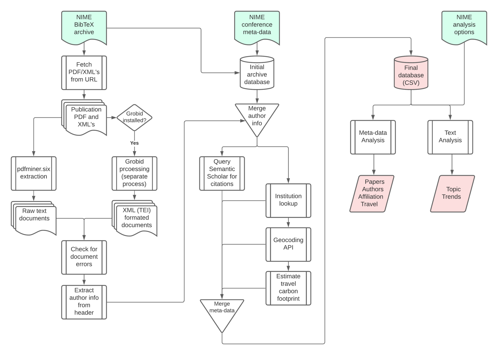

A Toolkit for the Analysis of the NIME Proceedings Archive
Abstract
This paper describes a toolkit for analyzing the NIME proceedings archive, which facilitates the bibliometric study of the conference papers and the identification of trends and patterns. The toolkit is implemented as a collection of Python methods that aggregate, scrape and retrieve various meta-data from published papers. Extracted data is stored in a large numeric table as well as plain text files. Analytical functions within the toolkit can be easily extended or modified. The text mining script that can be highly customized without the need for programming. The toolkit uses only publicly available information organized in standard formats, and is available as open-source software to promote continuous development in step with the NIME archive.
Author Keywords
proceedings analysis, bibliographic analysis, topic modeling
CCS Concepts
•Information systems~Information retrieval~Specialized information retrieval~Structure and multilingual text search~Structured text search•Information systems~Information retrieval~Retrieval tasks and goals~Information extraction
1. Introduction
The growing number of meta-studies and systematic reviews of the NIME literature [1][2][3][4][5][6][7][8] highlight the state of maturity and diversity that the community has reached. Since 2001, 1955 papers have been published at NIME conferences. These are openly archived by the community and available through a single webpage1, with bibliographic information stored in GitHub2. Full text papers are stored in Zenodo3 and on the NIME website in PDF format until 2020, while from 2021 these are published through PubPub4 and available in a variety of file formats. As the size of this corpus keeps growing, manual analyses are increasingly unfeasible. However, the consistent archiving of NIME papers, along with NIME’s commitment to open research, provides a rich trove for bibliometric studies. Even still, challenges remain when mining beyond simple bibliographic metadata and abstracts, which are accessible from the proceedings archive.
The toolkit we introduce aims to support meta-analysis which may require more detailed metrics extracted from the corpus of paper. For example, this may include the paper's length, citation count, or the author's affiliation, gender or geolocation. Moreover, the toolkit allows mining the body of the texts to identify the frequency of occurrence of selected groups of keywords while ignoring others. These analyses can look at the entire corpus or focus on a limited time range. Studies based on this extracted data can provide a broad sense of the demographics, history, trends and perspectives in the NIME community.
Many tools and resources have been available for bibliographic analysis and mining of academic literature5. However, many are limited to types of analysis that are either very specific or relatively shallow. Among those that are open-source we find text-based topic classifiers [9], document retrieval tools6 and even wider scoped toolkits like metaknowledge [10], which appears most closely aligned with our work. However, while there are similar metadata de-structuring techniques and novel features like citation graph generation, metaknowledge does not deal directly with the raw content of an article, but only with its related metadata. These analyses result from a pure metadata approach are often only able to parse the abstract and miss the richness of the full text. Additionally, the majority of them require significant effort in organizing corpus of papers to be mined and eventually passing this data across tools.
The toolkit we developed represents a significant advance in the integration of analytical functionalities, automation of an end-to-end processing flow, depth, and broadness of the analysis results for the NIME proceedings. The toolkit is specifically tailored to work with the NIME archival corpus as it can access repositories, manage associated formats in which papers have been stored over the years, and deal with specific name parsing.
At times, prior meta-studies use also information collected through the conference management systems, which is generally not available to the public. Our toolkit and the generated data only rely only on publicly available data. Designing such a toolkit in this manner is challenging as the quality of the extracted material, likelihood for errors, and exceptions are all dependent on the robust methods of retrieval and it as well prevents access to insider information such as the acceptance rate. On the other side, this approach maximizes longevity and accessibility because anyone can use the toolkit to repeat the data extraction and subsequent analyses, including also proceedings from future NIME editions. The toolkit is openly available online7, with the source code shared with a GNU General Public License v3.0 (GPLv3)8. This allows the NIME community to use and expand the toolkit, as well as re-align it with future changes of the publication or archiving system.
2. Design
The toolkit is based on a collection of Python methods we specifically developed for a meta study over the the first twenty years of NIME conferences [8]. These have been integrated into a toolkit that provides a variety of analysis and mining functionalities that are customizable by the end-user without the programming needs. Beside developing the toolkit, we have also used it extensively to study the NIME literature corpus. This activity has led to the discovery of a several exceptions, irregularities and possible improvements which have been either reported to and fixed by archive maintainers or explicitly handled within toolkit. Finally, the toolkit also handles papers published from 2021 onward, which are hosted digitally via PubPub, presenting significant differences with the earlier corpus.
The toolkit's core functionality can be split in two separate parts, one for extracting the data from the archive, the other focusing on the analysis of the aggregated data. This design allows users to retrieve and aggregate data from a corpus without being bound to the processes that generate statistical analyses. It also enables users to edits the generated dataset if any errors occurred in the automated extraction process. A chief feature of the toolkit’s design is robustness, which is required to extract data from the wide variety in layout and encoding formats of NIME PDF papers. The two parts of the toolkit have been developed organically in to analyze the NIME archive and with generalization in mind for any collection of academic literature.
The primary material that this toolkit relies upon is the NIME list of BibTeX entries, a standard format for bibliometric references, that spans over the various editions of the conference. These include information such as author name, title, year, DOI and URL to the PDF file or to the PubPub page. The URLs allow the toolkit to download PDF or XML file, in the case of PubPub, which are processed to extract essential authors’ information from the header of the document, as well as the raw text of the paper. From here our text extraction methods generate a series of novel fields regarding the authors and paper. These fields include estimation of author’s gender, location as physical address, latitude and longitude, university, organization, email, author’s distance from conference location, and author’s carbon expenditure in reaching the conference. Location information is extracted from explicit addresses present in the authors’ affiliations or from the name of an institution or organization’s name.
Author’s gender is inferred through the first name of the author using two different techniques, as described in Section 3.2. There is a clear and considerable gender disparity in the authorship within the sciences broadly [11][12] as well as within musical human computer interaction, music information retrieval, and audio engineering publications [7][13][14]. Various approaches are taken within these studies to ascertain an author’s gender but all include a fallback estimation of binary gender through a statistical model of name-gender frequency via census data. The method developed by Young et al. [14] where direct attempts were first made to ask the author, followed by referencing pronouns from an author’s bio before finally defaulting to a photo or name is an accurate and respectful approach but at a significant time cost. The present approach optimizes for time and is just one a facet of the metadata retrieval and processing.
The toolkit can also provide information regarding the paper’s content itself, such as number of pages, word count, and number of authors. The only manual information that has been compiled in a separate database is yearly conference information, which provides information regarding the conference, its location, keynote speakers, and reviewers. These data extend common bibliographic information that can be reliably retrieved from available sources and is robust enough to cover many edge cases when working with sources with incomplete information.
3. Extraction
The toolkit's primary function is to aggregate multiple sources of information over each paper. While a reasonable amount of information can be often gathered from standardized formats like BibTeX, such as author names, page counts, key words and the abstract, deep analysis require more articulated metrics for comparison. Indeed, this is compounded by the issues that arise when dealing with corpi that have been digitally archived across many years, where both a paper’s visual standard and digital archival techniques change. As a result, the toolkit’s methods have been developed to be adaptable and employ other packages and API’s to achieve high quality extractions. A flowchart summarizing the extraction process is illustrated in Image 1.


Flowchart of toolkit data extraction, meta-data aggregation, and analyses.
3.1 Text Extraction
There are myriad issues involved in working with raw text scraped from PDF's. Archival methods and technology vary across institution and change over the years along with the visual layout of the papers themselves. To overcome this hurdle, this toolkit approaches text extraction from a number of angles including packages for PDF extraction, regular expressions, and email handle lookups. However, if the text encoded within the PDF is malformed, there little that can be done automatically. Indeed, the process of extracting text from these PDFs brought attention to some documents within the corpus that were either corrupted or improperly encoded. Given these hurdles, this toolkit also provides fields to indicate when information, like the authors’ affiliations, cannot be identified or if text from a PDF cannot be extracted along with a utility9 to attempt to repair the PDF.
From the basic provided information, the toolkit initially scrapes raw text encoded with the PDF either from the Python package pdfminer.six10, supported as a high quality PDF text extraction method, as well as the machine-learning driven utility, Grobid11 [15]. One essential source of information regarding the authors is often found at the header of a paper, where authors often list their locations, institutions, departments and emails, which are useful in providing some insight into the demographics of the authors. Unfortunately, much of this data is inconsistent, both in the content and order of the author's information as well as its layout on the page.
To overcome this hurdle, the toolkit leverages a number of techniques to clean and collect relevant data for each author found in the paper’s header. While pdfminer.six is a package that can be installed through the pip package manager via Python, Grobid is a much larger standalone application that is installed and kept updated by the toolkit on first run. Grobid provides pre-trained machine learning models and methods to identify and extract text from PDF's into a format standardized by the Text Encoding Initiative12 (TEI). The result, a TEI flavored markup language, provides syntax to wrap the raw extracted text in tags that identify author affiliations, emails, heading text, references, text body and more. It is essential in providing high-quality renderings of this information and is the preferred technique in PDF extraction for this toolkit. Both methods are utilized for redundancy to pull raw text from the documents with the aim of extracting headers.
3.2 Metadata Aggregation
After the steps described in the previous section, raw text extraction, author affiliations, addresses, and emails have been gathered and appended to a DataFrame, a Pandas13 object for hold data tables in Python. Upon retrieving this information for each author, tasks are performed to guess the gender of the author's first name, extract institution locations from an email handle, as well as querying author locations to a geocoding API, which returns a location with coordinates to calculate distance from the conference venue and their associated carbon footprint. The various metadata collected and the methods of retrieval can been viewed in Table 1.
Gender estimation is done by two packages. The first, gender-guesser14 a Naive-Bayes classifier that has been tested in a comparative analysis to have a low mis-classification rate and gender bias [16] and is based on an international dataset [17], through largely European. The classification is categorical across the axis of male-female. The other, onomancer15, which provides binary classification and a pre-trained model to classify unseen names based on US and WIPO public name data. Both are provided with the acknowledged limitation of the binary model of gender as exclusionary. While the estimates do not encompass the full spectrum of gender identity, they can capture some rough picture of diversity within NIME for the sake of illuminating reported disparities in gender within the field. Moreover the toolkit performs significant pre-processing of authors names to remove false duplicates triggered by inconsistent registration across BibTeX entries of middle names, academic titles, and non-ASCII characters.
Emails, located in the author headings, are striped for their handles and looked up in a database of university email domains16. This database contains not only the names of most institutions but their country and state. This information is quite useful on its own to associate a university given an easily recognizable email handle and avoids potential discrepancies when parsing the name of the university from the raw text. It also allows us to make better location queries when there is insufficient author location info.
Data collected and acquisition methods | |
Data type | Acquisition method |
|---|---|
Raw text documents | Grobid, pdfminder.six text extraction |
Longitude and latitude | OpenCage API |
Author mailing address | Grobid XML tags, RegEx search |
Author distance to conference | geopy distance calculation |
Author gender | gender_guesser, onomancer |
Author university or institution | University Domains and Names List lookup, Grobid XML tags, RegEx search |
Citations | Semantic Scholar API |
Geocoding is provided by OpenCage’s API17, a privacy friendly and open data service that can deliver geo-coordinates given a query string. Depending on the information available from the author, this location query is chosen from institution lookups, Grobid XML tags, or simply Regular Expression (RegEx) searches through raw text. The API returns detailed location metadata from which we use a corrected physical address, latitude longitude, and the API’s confidence in its geocoded response. These locations can provide author's carbon footprint in case they travel to the conference venue, building off of the work of Milan K. [18]. Simple calculations are used from a three leveled distance formula, for short, medium and long modes of transport.
Finally, each article's current citation number is gathered using Semantic Scholar API18 through an algorithm that iteratively finds and verify the correct paper in the database using different combinations of title and authors keywords in the query string. Most papers can be retrieved simply querying the database with title and authors name, but in a significant number of cases this fails because of non-ASCII characters, incomplete list of authors registered in the database, or papers with short titles and single author returning too many results. If the algorithms fails to find the paper in the database, it is reasonable to assume that the paper has never been cited. With respect to NIME and compared to other database of academic literature, we selected Semantic Scholar because it provide a good tradeoff between integrity of corpus and reliability of sources.
The extraction process described in this section can be can be modified by using custom flags when the script is called for execution, as described in the toolkit documentation. Collectively, the meta-data fetched and extracted from the papers is exported from the DataFrame to a numerical table stored in CSV file. The text extracted from all papers is also stored, allowing users to perform direct analysis of the data described in the next section. To facilitate crediting and reconciliation with the original sources, we selected a file naming convention aligned to the one used in the NIME archive.
4. Analysis
After all relevant information is scraped and processed, two methods of analysis are provided as independent scripts. One is focused on the analysis of meta data using the aggregated DataFrame as input. This method computes variety of figures and metrics and their trend over the years. Analysis results are organized in four macro categories: papers, authors, affiliation and travel. The other method models term frequency and topics and receives scraped body text of the papers as input.
An important feature of the scripts is the ability for users to have control over the selection of data analyzed. To this end, a custom configuration can be defined in a separate file that allows restricting the analysis to specific years as well as specify terms to search for. It is also possible to ignore certain words from analysis or merge groups of words to be counted together, such as different words with identical semantics within specific contexts.
While the primary product of the toolkit’s generation script is a database, raw text files are also produced from both the Grobid and pdfminer.six extraction packages. Compared to pdfminder.six, Grobid’s extraction and parsing of text provides coded tags to each section of text scraped, mitigating many of the issues of removing non-meaningful text (headings, repeated monograms, text within figures, etc.). The resultant XML files contain tagged citations as well that may offer further insights into the internal network of citations within NIME, though this path was not followed in our current analysis.
In working with the raw text, we use the Natural Language Toolkit (NLTK) [19] and Gensim [20] libraries for pre-processing, cleaning, lemmatizing and the Gensim library exclusive for composing an LDA model from which semantically congruent topics can be generated from a body of text. Both packages supply the needed tools for robust and efficient natural language processing. For both term and topic analysis, each paper’s raw text is converted to lowercase, filtered to remove non-alpha characters, tokenized, and stop words are pruned. The group of words are then lemmatized, a process by which inflected words of the same semantic root are set as the same word. The result of this preprocessing is a collection of semantically relevant words whose terms and topics are explored with statistical methods.
Both term and topic analysis can provide interesting insights into a corpus of literature. The methods of term analysis are provided from internal functions and are simple counts of terms over years and papers. While basic, these statistics can offer macroscopic insights into the literature that would be otherwise impossible to retrieve. These term statistics can be easily expanded across any of the fields within the enriched database that are linked to a paper. Topic modeling is completed with a Latent Dirichlet Allocation (LDA) model [21], a process that holds that a document is composed of a mixture of topics which can be inferred through the distribution of words within a document. Within natural language processing, LDA is an often used model to classify documents and this context, it may provide some sense of the various topics that compose individual documents and the NIME corpus as a whole. The toolkit provides functions to configure and visualize topics both in their composition, via PyLDAvis19, and over time.
5. Performance and Limitations
The toolkit is successful extracting and summarizing information associated to the NIME papers that was previously not readily available [8]. Given the challenge of dealing with inconsistent PDF text encoding, the toolkit succeeds in providing accurate metadata fields that accompany the information provided via the initial BibTeX entry. Due to the nature of our data acquisition methods, there cannot be absolute accuracy.
While Grobid takes much of the difficulty out of disentangling locations, emails, and organizations from the paper’s affiliations, it is not always correct. Many authors who publish under the same institution decide to group their names and affiliations together. This becomes a non-trivial issue when Grobid is unable to match this affiliation with all authors. More work needs to be done to address these cases. As mentioned, gender estimation has technical and ethical limitations. Though the present method is the standard in inferencing from academic literature, a proper representation of NIME’s authorship would be enabled by a voluntary census completed by its authors.
The transition to PubPub has allowed for transparent, open, and modern hosting of the publication which has allow enabled clear structuring of the article’s text available. Indeed, the paper can now be downloaded as an XML and converted into the TEI flavor quickly and easily enabling accurate retrieval of the paper’s text without crude extraction techniques. Downloading this document does involve parsing the source of the PubPub page. Additionally, PubPub does not allow the author to include explicitly information about their institution, location, or email. This information can be retrieved on an individuals PubPub profile but would involve invasive scraping. A public facing API would resolve many of these issues of retrieval and has been brought up to the developers20.
The toolkit requires a significant amount of time to download and process all materials when starting from scratch. However, we make extensive use of caches to store downloaded files, pdfminer text files, Grobid XML files, and results of queries such as OpenCage location and Semantic Scholar citations. Through custom flags it is possible to clear and force a re-population of caches. The cache also allows one to resume the process when accidental fatal errors occur, such as connection timeouts. Currently, Grobid conversion and Semantic Scholar querying are the most time consuming components. The execution time of the first depends on the processing power of the machine, while the second is limited to 100 requests per 5 minutes, and several papers require multiple queries before landing on the correct result.
6. Conclusion and Future Work
This toolkit allows for the batch fetching and aggregation of meta-data from a the NIME corpus of papers. It integrates a collection of methods that enable the enrichment of otherwise difficult to request information. Based around a modular system of extraction and data retrieval, it is also possible to easily build upon the scripts to generate a database and visualizations for analysis beyond the currently provided fields and scripts. To this end, the project’s source code is freely provided under the GPL-3 license that allows anyone to modify and redistribute new projects under the same license.
While this toolkit has been designed with the NIME papers corpus in mind, the methods in the toolkit scripts might be generalizable to any archive of academic literature given a proper BibTeX to describe basic information and location of the associated PDF papers. Most of the analyses and techniques employed by the toolkit are not specific in any way to NIME. Moreover, since the toolkit uses only publicly available information organized in standard formats, the key functionalities can be generalized or forked for use with other corpora.
One aspect that can be further developed is the creation of a linked network of NIME publications both in and outside the NIME proceedings. Our text extraction method, Grobid, is able to delineate citation information from within the article and would thus be available for use. This could help to identify external authors, research communities and fields that had a significant impact on NIME as well as those that has been significantly influenced by the works presented at NIME. Moreover, this activity can help to gather and analyze works on interfaces for musical expression that had been published in venues outside NIME given the field of musical interface design predates the conference itself. One direct implication is a more confident topic analysis of the field that we currently only estimate from NIME. However, this is out of the scope of the work presented here, as the tool analyzes only papers published at NIME. If a contributor wished to incorporate another journal following a similar BibTex formatting to NIME the tool can be used for a more comprehensive analysis on the field’s corpus.
As the NIME community has moved forward with a new publishing format in PubPub, methods within this toolkit can be further updated to improve accuracy, especially when extracting author metadata from these web based documents, and include integrated media in the analysis. However, this migration may present challenges as the toolkit may require adjustments every time the PubPub platform is independently updated.
Ethics Statement
This work hopes to contribute to the democratization of the bibliographic, demographics, and impact of the NIME proceedings and aligns its structure, licensing, and limitations with that goal in mind. The toolkit builds its functionality from open-source projects that have had immense benefits to the information retrieval community and hopes to contribute to that community with this utility. As such, any conflicts with data transparency and privacy are made clear within the code base and the sources from which we reference to compile our dataset are barrier free.
Considering the possible analyses of this public data may misinterpret facets of identity or institutional origin, it should be made clear any inference of an individual’s identity has been made for the sake of illuminating well-known biases within the community. Gender specifically, via it’s inference by first name, is based on open data collected from largely European countries datasets (whilst including larger Asian countries)21, US Social Security records22 and World Intellectual Property Organization23 and will as a result under-represent non-Western names. Unfortunately, these sources are the standards most estimation libraries rely upon and we use them for the sake of accuracy and utility keeping in mind their clear limitation. Our tool does not claim to represent the full scope of identity or complete accuracy but a method of quickly filling in an important historical gap in data on the demographics of academic publishing.
Footnotes
- ↩
- ↩
- ↩
- ↩
https://shubhanshu.com/awesome-scholarly-data-analysis/ and https://tools.kausalflow.com/tools/
↩- ↩
- ↩
- ↩
- ↩
- ↩
- ↩
- ↩
- ↩
- ↩
- ↩
- ↩
- ↩
- ↩
- ↩
- ↩
Original article (German) with data zip over FTP linked:
↩
https://www.heise.de/ct/ftp/07/17/182/- ↩
- ↩
Citations
- ↩Jensenius, A. R. (2014). To gesture or Not? An Analysis of Terminology in NIME Proceedings 2001–2013. Proceedings of the International Conference on New Interfaces for Musical Expression, 217–220. https://doi.org/10.5281/zenodo.1178816
- ↩Schlienger, D., & Tervo, S. (2014). Acoustic Localisation as an Alternative to Positioning Principles in Applications presented at NIME 2001-2013. Proceedings of the International Conference on New Interfaces for Musical Expression, 439–442. https://doi.org/10.5281/zenodo.1178933
- ↩Marquez-Borbon, A., & Stapleton, P. (2015). Fourteen Years of NIME: The Value and Meaning of `Community’ in Interactive Music Research. In E. Berdahl & J. Allison (Eds.), Proceedings of the International Conference on New Interfaces for Musical Expression (pp. 307–312). Louisiana State University. https://doi.org/10.5281/zenodo.1179128
- ↩Jensenius, A. R., & Lyons, M. J. (2016). Trends at NIME—Reflections on Editing A NIME Reader. Proceedings of the International Conference on New Interfaces for Musical Expression, 16, 439–443. https://doi.org/10.5281/zenodo.1176044
- ↩Morreale, F., & McPherson, A. (2017). Design for Longevity: Ongoing Use of Instruments from NIME 2010-14. Proceedings of the International Conference on New Interfaces for Musical Expression, 192–197. https://doi.org/10.5281/zenodo.1176218
- ↩Morreale, F., McPherson, A. P., & Wanderley, M. (2018). NIME Identity from the Performer’s Perspective. In T. M. Luke Dahl Douglas Bowman (Ed.), Proceedings of the International Conference on New Interfaces for Musical Expression (pp. 168–173). Virginia Tech. https://doi.org/10.5281/zenodo.1302533
- ↩Xambó, A. (2018). Who Are the Women Authors in NIME?–Improving Gender Balance in NIME Research. In T. M. Luke Dahl Douglas Bowman (Ed.), Proceedings of the International Conference on New Interfaces for Musical Expression (pp. 174–177). Virginia Tech. https://doi.org/10.5281/zenodo.1302535
- ↩Fasciani, S., & Goode, J. (2021, June). 20 NIMEs: Twenty Years of New Interfaces for Musical Expression. Proceedings of the International Conference on New Interfaces for Musical Expression. https://doi.org/10.21428/92fbeb44.b368bcd5
- ↩Osborne, F., Salatino, A., Birukou, A., & Motta, E. (2016). Automatic classification of springer nature proceedings with smart topic miner. International Semantic Web Conference, 383–399.
- ↩McLevey, J., & McIlroy-Young, R. (2017). Introducing metaknowledge: Software for computational research in information science, network analysis, and science of science. Journal of Informetrics, 11(1), 176–197.
- ↩Fasciani, S., & Goode, J. (2021, June). 20 NIMEs: Twenty Years of New Interfaces for Musical Expression. Proceedings of the International Conference on New Interfaces for Musical Expression. https://doi.org/10.21428/92fbeb44.b368bcd5
- ↩West. (2013). The Role of Gender in Scholarly Authorship. PLOS ONE, 8(7), 1–6. https://doi.org/10.1371/journal.pone.0066212
- ↩Macaluso, B., Larivière, V., Sugimoto, T., & Sugimoto, C. R. (2016). Is science built on the shoulders of women? A study of gender differences in contributorship. Academic Medicine, 91(8), 1136–1142.
- ↩Xambó, A. (2018). Who Are the Women Authors in NIME?–Improving Gender Balance in NIME Research. In T. M. Luke Dahl Douglas Bowman (Ed.), Proceedings of the International Conference on New Interfaces for Musical Expression (pp. 174–177). Virginia Tech. https://doi.org/10.5281/zenodo.1302535
- ↩Hu, X., Choi, K., Lee, J. H., Laplante, A., Hao, Y., Cunningham, S. J., & Downie, J. S. (2016). WiMIR: An informetric study on women authors in ISMIR. International Society for Music Information Retrieval (ISMIR) Conference, 2016.
- ↩Young, K., Lovedee-Turner, M., Brereton, J., & Daffern, H. (2018). The impact of gender on conference authorship in audio engineering: Analysis using a new data collection method. IEEE Transactions on Education, 61(4), 328–335.
- ↩Young, K., Lovedee-Turner, M., Brereton, J., & Daffern, H. (2018). The impact of gender on conference authorship in audio engineering: Analysis using a new data collection method. IEEE Transactions on Education, 61(4), 328–335.
- ↩Tkaczyk, D., Collins, A., Sheridan, P., & Beel, J. (2018). Machine Learning vs. Rules and Out-of-the-Box vs. Retrained: An Evaluation of Open-Source Bibliographic Reference and Citation Parsers. Proceedings of the 18th ACM/IEEE on Joint Conference on Digital Libraries, 99–108. https://doi.org/10.1145/3197026.3197048
- ↩Santamaría, L., & Mihaljević, H. (2018). Comparison and benchmark of name-to-gender inference services. PeerJ Computer Science, 4, e156. https://doi.org/10.7717/peerj-cs.156
- ↩Michael, J. (2007). 40 000 Namen. Anredebestimmung anhand des Vornamens. C’t, 17, 182–183. http://www.heise.de/ct/ftp/07/17/182/
- ↩Milan, K. (2020). milankl/CarbonFootprintAGU. Zenodo. https://doi.org/10.5281/zenodo.3896775
- ↩Loper, E., & Bird, S. (2002). NLTK: The Natural Language Toolkit. Proceedings of the ACL-02 Workshop on Effective Tools and Methodologies for Teaching Natural Language Processing and Computational Linguistics, 63–70.
- ↩Řeh\uuřek, R., Sojka, P., & others. (2011). Gensim—statistical semantics in python. Retrieved from Genism. Org.
- ↩Blei, D. M., Ng, A. Y., & Jordan, M. I. (2003). Latent Dirichlet Allocation. Journal of Machine Learning Research, 3(Jan), 993–1022.
- ↩Fasciani, S., & Goode, J. (2021, June). 20 NIMEs: Twenty Years of New Interfaces for Musical Expression. Proceedings of the International Conference on New Interfaces for Musical Expression. https://doi.org/10.21428/92fbeb44.b368bcd5